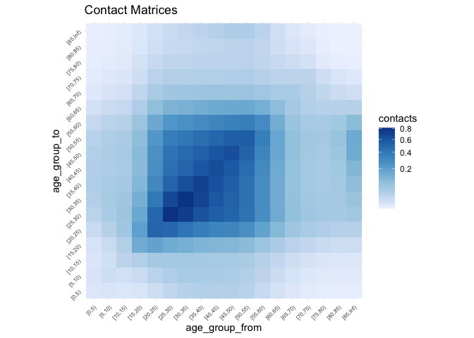

The goal of conmat is to make it easy to generate synthetic contact matrices for a given age population.
What is a contact matrix?
Contact matrices describe the degree of contact between individuals of given age groups.
For example, this matrix describes the number of contacts between individuals
#> 0-4 5-9 10-14
#> 0-4 10 3 4
#> 5-9 3 11 5
#> 10-14 4 5 13The rows and columns represent the age groups of the people. On the main diagonal we see that we have a higher number of contacts - showing that people of similar ages tend to interact more with one another.
We can use the information in these matrices to model how diseases such as COVID-19 spread in a population through social contact.
Why do we need synthetic contact matrices?
Contact matrices are produced from empirical data resulting from a contact survey, which requires individuals to diary the amount and manner of contact a person has in a day.
However, these surveys are highly time-consuming and expensive to run, meaning that only a handful of these empirical datasets exist globally.
We can use statistical methods to create synthetic contact matrices, which are new contact matrices that have been generalised to new countries based on existing surveys.
Why do we need conmat?
Existing methods only provide outputs of the contact matrices for each country, or at best, for urban and rural areas for a given country.
We need methods that allow for flexibly creating synthetic contact matrices for a specified age population, as the age population distribution of many countries (e.g., Australia), are quite heterogeneous, and assuming it is homogeneous would result in inaccurate representation of community infection in many regions.
Installation
You can install the development version with:
install.packages("conmat", repos = "https://njtierney.r-universe.dev")Or alternatively you can use remotes
# install.packages("remotes")
remotes::install_github("njtierney/conmat")Example
First we want to fit the model to the POLYMOD data, which contains various survey and population data.
library(conmat)
polymod_contact_data <- get_polymod_contact_data(setting = "work")
polymod_survey_data <- get_polymod_population()The contact data is a data frame containing the age from and to, and the number of contacts for each of the specified settings, “home”, “work”, “school”, “other”, or “all” as well as the number of participants. By default, polymod_contact_data contains data from “all”, but we’re going to use the “work” set of data, as it produces an interesting looking dataset. Each row contains survey information of the number of contacts. Specifically, the number of contacts from one age group to another age group, and then the number of participants in that age group.
The survey data, polymod_survey_data contains the lower age limit and the population in that age group.
polymod_survey_data
#> # A tibble: 21 × 2 (conmat_population)
#> - age: lower.age.limit
#> - population: population
#> lower.age.limit population
#> <int> <dbl>
#> 1 0 1852682.
#> 2 5 1968449.
#> 3 10 2138897.
#> 4 15 2312032.
#> 5 20 2407486.
#> 6 25 2423602.
#> 7 30 2585137.
#> 8 35 2969393.
#> 9 40 3041663.
#> 10 45 2809154.
#> # … with 11 more rowsPredicting the contact rate
We can create a model of the contact rate with the function fit_single_contact_model
set.seed(2022 - 09 - 06)
contact_model <- fit_single_contact_model(
contact_data = polymod_contact_data,
population = polymod_survey_data
)
#> Warning in bgam.fit(G, mf, chunk.size, gp, scale, gamma, method = method, :
#> fitted rates numerically 0 occurredThis fits a generalised additive model (GAM), predicting the contact rate, based on a series of prediction terms that describe various features of the contact rates.
contact_model
#>
#> Family: poisson
#> Link function: log
#>
#> Formula:
#> contacts ~ s(gam_age_offdiag) + s(gam_age_offdiag_2) + s(gam_age_diag_prod) +
#> s(gam_age_diag_sum) + s(gam_age_pmax) + s(gam_age_pmin) +
#> school_probability + work_probability + offset(log_contactable_population)
#>
#> Estimated degrees of freedom:
#> 1.00 4.27 5.51 6.23 7.89 7.36 total = 35.26
#>
#> fREML score: 24060.58 rank: 55/57We can use this contact model to then predict the contact rate in a new population.
As a demonstration, let’s take an age population from a given LGA in Australia (this was the initial motivation for the package, so there are some helper functions for Australian specific data).
fairfield <- abs_age_lga("Fairfield (C)")
fairfield
#> # A tibble: 18 × 4 (conmat_population)
#> - age: lower.age.limit
#> - population: population
#> lga lower.age.limit year population
#> <chr> <dbl> <dbl> <dbl>
#> 1 Fairfield (C) 0 2020 12261
#> 2 Fairfield (C) 5 2020 13093
#> 3 Fairfield (C) 10 2020 13602
#> 4 Fairfield (C) 15 2020 14323
#> 5 Fairfield (C) 20 2020 15932
#> 6 Fairfield (C) 25 2020 16190
#> 7 Fairfield (C) 30 2020 14134
#> 8 Fairfield (C) 35 2020 13034
#> 9 Fairfield (C) 40 2020 12217
#> 10 Fairfield (C) 45 2020 13449
#> 11 Fairfield (C) 50 2020 13419
#> 12 Fairfield (C) 55 2020 13652
#> 13 Fairfield (C) 60 2020 12907
#> 14 Fairfield (C) 65 2020 10541
#> 15 Fairfield (C) 70 2020 8227
#> 16 Fairfield (C) 75 2020 5598
#> 17 Fairfield (C) 80 2020 4006
#> 18 Fairfield (C) 85 2020 4240We can then pass the contact model through to predict_contacts, along with the fairfield age population data, and some age breaks that we want to predict to.
set.seed(2022 - 09 - 06)
synthetic_contact_fairfield <- predict_contacts(
model = contact_model,
population = fairfield,
age_breaks = c(seq(0, 85, by = 5), Inf)
)
synthetic_contact_fairfield
#> # A tibble: 324 × 3
#> age_group_from age_group_to contacts
#> <fct> <fct> <dbl>
#> 1 [0,5) [0,5) 0.00213
#> 2 [0,5) [5,10) 0.00360
#> 3 [0,5) [10,15) 0.00305
#> 4 [0,5) [15,20) 0.00444
#> 5 [0,5) [20,25) 0.0110
#> 6 [0,5) [25,30) 0.0218
#> 7 [0,5) [30,35) 0.0317
#> 8 [0,5) [35,40) 0.0345
#> 9 [0,5) [40,45) 0.0341
#> 10 [0,5) [45,50) 0.0330
#> # … with 314 more rowsPlotting
Let’s visualise the matrix to get a sense of the predictions with autoplot. First we need to transform the predictions to a matrix:
synthetic_contact_fairfield %>%
predictions_to_matrix() %>%
autoplot()
Applying the model across all settings.
You can also fit a model for all of the settings all at once with a series of functions, fit_setting_contacts, and predict_setting_contacts. This means we can do the above, but for each setting, “home”, “work”, “school”, “other”, and “all”. We would recommend this when using conmat, as it is a pretty common use case. However for demonstration purposes we wanted to show how it works for a single matrix here first. We also provide details on how to fit the model to each of these settings in parallel. For more details on that workflow, see the “getting started” vignette.
Data sources
This package provides data and helper functions for the data, for use in calculating contact matrices. The data sources are from the Australian Bureau of Statistics (ABS), as we were using these a lot when we created the package. In the future we might wrap these data sources and helpers into another package, but for the time being they are here. Below are a couple of examples of data provided, see the “data sources” vignette and helpful at the website for full details.
You can extract the age population structure for the LGA, Brisbane, like so:
abs_age_lga("Brisbane (C)")
#> # A tibble: 18 × 4 (conmat_population)
#> - age: lower.age.limit
#> - population: population
#> lga lower.age.limit year population
#> <chr> <dbl> <dbl> <dbl>
#> 1 Brisbane (C) 0 2020 72894
#> 2 Brisbane (C) 5 2020 75933
#> 3 Brisbane (C) 10 2020 73990
#> 4 Brisbane (C) 15 2020 72010
#> 5 Brisbane (C) 20 2020 104564
#> 6 Brisbane (C) 25 2020 119000
#> 7 Brisbane (C) 30 2020 110798
#> 8 Brisbane (C) 35 2020 100493
#> 9 Brisbane (C) 40 2020 86630
#> 10 Brisbane (C) 45 2020 86791
#> 11 Brisbane (C) 50 2020 76063
#> 12 Brisbane (C) 55 2020 69273
#> 13 Brisbane (C) 60 2020 59666
#> 14 Brisbane (C) 65 2020 49134
#> 15 Brisbane (C) 70 2020 42252
#> 16 Brisbane (C) 75 2020 29927
#> 17 Brisbane (C) 80 2020 20898
#> 18 Brisbane (C) 85 2020 22683Note that you need to use the exact LGA name - you can look up LGA names in the data set abs_lga_lookup:
abs_lga_lookup
#> # A tibble: 544 × 3
#> state lga_code lga
#> <chr> <dbl> <chr>
#> 1 NSW 10050 Albury (C)
#> 2 NSW 10180 Armidale Regional (A)
#> 3 NSW 10250 Ballina (A)
#> 4 NSW 10300 Balranald (A)
#> 5 NSW 10470 Bathurst Regional (A)
#> 6 NSW 10500 Bayside (A)
#> 7 NSW 10550 Bega Valley (A)
#> 8 NSW 10600 Bellingen (A)
#> 9 NSW 10650 Berrigan (A)
#> 10 NSW 10750 Blacktown (C)
#> # … with 534 more rowsOr get the information for states like so:
abs_age_state(state_name = "QLD")
#> # A tibble: 18 × 4 (conmat_population)
#> - age: lower.age.limit
#> - population: population
#> year state lower.age.limit population
#> <dbl> <chr> <dbl> <dbl>
#> 1 2020 QLD 0 314602
#> 2 2020 QLD 5 339247
#> 3 2020 QLD 10 345205
#> 4 2020 QLD 15 319014
#> 5 2020 QLD 20 338824
#> 6 2020 QLD 25 370468
#> 7 2020 QLD 30 362541
#> 8 2020 QLD 35 354219
#> 9 2020 QLD 40 325208
#> 10 2020 QLD 45 348003
#> 11 2020 QLD 50 321168
#> 12 2020 QLD 55 317489
#> 13 2020 QLD 60 288317
#> 14 2020 QLD 65 254114
#> 15 2020 QLD 70 226033
#> 16 2020 QLD 75 156776
#> 17 2020 QLD 80 100692
#> 18 2020 QLD 85 94266Note
The contact matrices created using this package are transposed when compared to the contact matrices discussed by Prem and Mossong. That is, the rows are “age group to”, and the columns are “age group from”.
Code of Conduct
Please note that the conmat project is released with a Contributor Code of Conduct. By contributing to this project, you agree to abide by its terms.